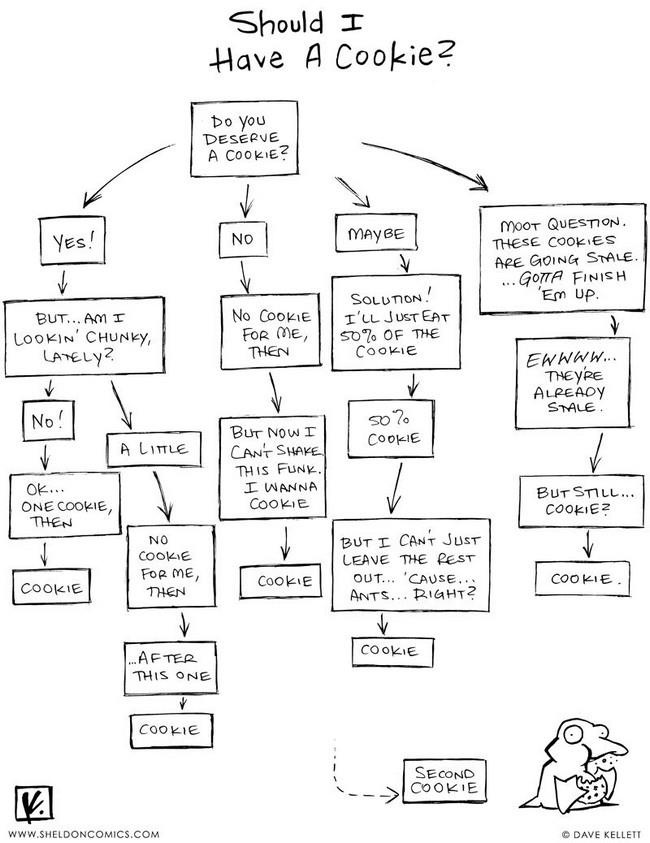
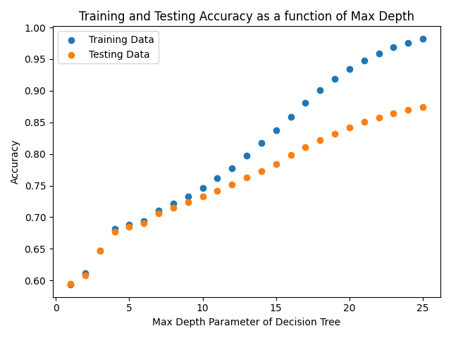

Decision Trees
Note: If the math elements on the page are not rendering properly, try refreshing the page.
Overview
Look at the image below. 
Now look at the next image:
Comical decision flow charts like the first image are all over the internet, but they are not actually too far off from a decision tree like the second image used in machine learning to generate predictions. Both images show a starting node, they both branch off to lower nodes, and the further down the tree things progress, the more complicated things seem to get. Machine learning decision trees are just these flowchart-like structures that are created using data.
Decision trees are trained by calculating the loss or cost of various nodes and branches. Two ways to calculate the cost is by either a measure of entropy or a measure called gini. The formula for gini is $$ 1 - {{math.sum("i=1", "C")}}p_i^2 $$ and entropy is $$ -{{math.sum("i=1", "C")}}p_ilog_2(p_i), $$ where $C$ is the number of classes and $p$ represents the probability of a class. As stated before, these are used to measure the cost of a given branch. The higher the cost, the worse the prediction. Another way to think about it is as a goodness of split, where lower values of gini or entropy are better. Return your attention to the second image above. Note that on the second line of every box (3rd line on the last row), there is a value for gini. Notice also that as we progress down the tree, the value of gini decreases. This shows that moving down the tree increases the "goodness of split" and thus predictions are improving.
Decision Tree for Spotify Data
All code can be found here and all data here.
The current spotify data looks like this:

The value that we are going to try and predict with a decision tree is whether or not a song is instrumental.
The spotify API states that an instrumentalness score of below 0.5 is likely not instrumental, while a score of above 0.5 is. After dropping unnecessary columns and creating the label, the data looks like this:

For supervised learning, we need labeled data to train the model. The label for this data is "instrumental". So we will first separate the actual data from the label. The image on the left is the data, while the image on the right is the label vector.


It is important in supervised learning to have equal numbers of each class, but for this data that is not the case as shown below:

While there are several ways to potentially fix this issue, one method is to use what is known as oversampling. This in essence randomly duplicates samples from the minority class (in this case 1) so that the cases are even. This can be accomplished with the python package imblearn and the included class RandomOverSampler. Doing so fixes the imbalance:

The data now needs to be split into a training set and a testing set. This disjoin split is important to be able to evaluate the model. If the model is evaluated on the same data it is trained on, it might perform great. But there is no way to know if it will generalize well to other data. Thus, it needs to perform well on data that it has not seen. The model is trained on the training set, and then the labels of the testing set are predicted. The model is then evaluated by comparing the predicted labels to the actual labels. Splitting data into a training and testing set is easily accomplished with scikit learn's train__test_split method. See the images below. From left to right and going down, they are training data, testing data, training labels, and testing labels. Notice the larger size of the training data. 75% of the data is randomly assigned as training data, and 25% of the data is randomly assigned as testing data.


After the data is ready, the model is fit to the data. After a first pass, the follow confusion matrix and metrics are calculated:
Each measure looks quite good, but this is not necessarily the result that we want. This is because of overfitting. Decision trees commonly overfit the data. In a way this can be visualized by testing using both the training and testing data. See the image below. 
This shows that after a max depth of 10, the model begins to overfit to the training data and not generalize as well. Below is a confusion matrix and metrics for a max depth of 15:
The results look worse, but based on the plot above, we are more confident now that the model does not overfit. Lastly, from this decision tree model, we see that we are able to predict with almost 80% accuracy as to whether a song is an instrumental song or not. Thus, it seems that being instrumental is in some way a function of the other spotify features.
Scikit learn automatically chooses a root node, but we are able to influence that somewhat. In the images below, notice the root nodes are x[5], x[1], and x[3], respectively. These correpond to valence, acousticness, and loudness. Also note that the first utilizes gini for the loss calculation, while the second and third utilize entropy.